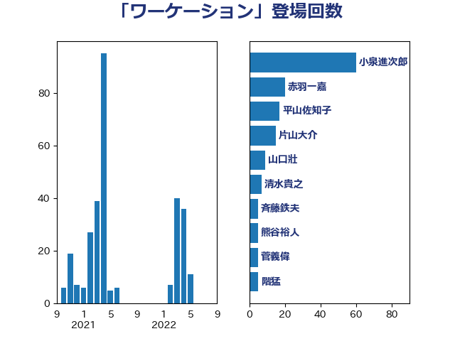

単語「ワーケーション」

| 小泉進次郎 | 自由民主党 | 60 回 |
| 赤羽一嘉 | 公明党 | 20 回 |
| 平山佐知子 | 無所属 | 17 回 |
| 片山大介 | 日本維新の会 | 15 回 |
| 山口壯 | 自由民主党 | 9 回 |
| 清水貴之 | 日本維新の会 | 7 回 |
| 斉藤鉄夫 | 公明党 | 5 回 |
| 熊谷裕人 | 立憲民主党 | 5 回 |
| 菅義偉 | 自由民主党 | 5 回 |
| 階猛 | 立憲民主党 | 5 回 |
| 中川宏昌 | 公明党 | 4 回 |
| 勝俣孝明 | 自由民主党 | 3 回 |
| 室井邦彦 | 日本維新の会 | 3 回 |
| 後藤祐一 | 立憲民主党 | 3 回 |
| 笹川博義 | 自由民主党 | 3 回 |
| 西村康稔 | 自由民主党 | 3 回 |
| 長友慎治 | 国民民主党 | 3 回 |
| ながえ孝子 | 無所属 | 2 回 |
| 寺田静 | 無所属 | 2 回 |
| 泉田裕彦 | 自由民主党 | 2 回 |
| 渡辺猛之 | 自由民主党 | 2 回 |
| 竹内真二 | 公明党 | 2 回 |
| 若宮健嗣 | 自由民主党 | 2 回 |
| 伴野豊 | 立憲民主党 | 1 回 |
| 勝部賢志 | 立憲民主党 | 1 回 |
| 大西英男 | 自由民主党 | 1 回 |
| 宮崎雅夫 | 自由民主党 | 1 回 |
| 宮本周司 | 自由民主党 | 1 回 |
| 小宮山泰子 | 立憲民主党 | 1 回 |
| 山口那津男 | 公明党 | 1 回 |
| 深澤陽一 | 自由民主党 | 1 回 |
| 猪口邦子 | 自由民主党 | 1 回 |
| 磯崎仁彦 | 自由民主党 | 1 回 |
| 神田憲次 | 自由民主党 | 1 回 |
| 福重隆浩 | 公明党 | 1 回 |
| 越智隆雄 | 自由民主党 | 1 回 |